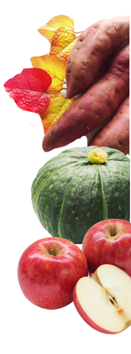
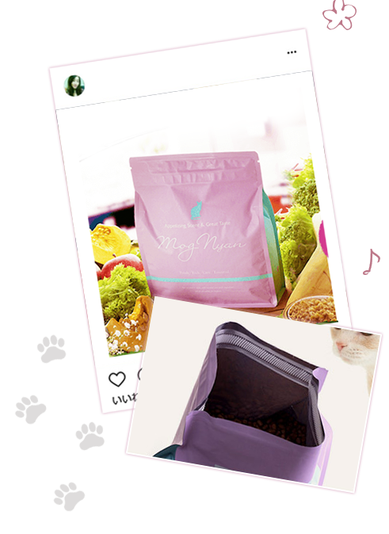

| 価格帯 | 全て 4,000円以下 4,001円以上 |
|---|---|
| 内容量 | 全て 2.0kg未満 2.0kg以上 |
| コスパ | 送料無料 定期割引 初回割引 |
キャットフード（猫エサ）に関するお悩みありませんか？
猫を飼っている方で、キャットフード（猫エサ）に関して次のようなお悩みをお持ちの方は少なくありません。
- ・ドライフード（カリカリ）の食いつきが悪い、飽きる
- ・エサをあげても吐き戻してしまう
- ・下肢尿路結石が気になる
- ・食べすぎで肥満になってきた
キャットフードを変えることでこれらの悩みが解決するなら嬉しいですよね。
猫は大切な家族の一員です。だからこそキャットフードは安全で高品質な商品を選びたいもの。現在、キャットフード市場ではプレミアムキャットフードが愛猫家たちの人気を集めており、次々と新しいキャットフードが販売されています。
しかし、商品が充実する一方で飼い主にとっては「どれを選んだら良いのかわからない」というデメリットも。そこで当サイトでは、本当におすすめできるキャットフードをランキング形式で比較しながらご紹介します。
 |
|||||||
| 商品名 | |||||||
| 対象年齢 | オールステージ | 商品ごとに異なる | オールステージ | オールステージ | オールステージ | オールステージ | 商品ごとに異なる |
| タイプ | ドライ | 商品ごとに異なる（ウエットもあり） | ドライ | ドライ（ウエットもあり） | ドライ | ドライ | ドライ |
| ポイント | 獣医師推薦×食欲をそそる白身魚の香り×高たんぱく×グレインフリー×ペット栄養管理士など資格保持者によるサポートサービス付き | 下肢尿路結石対応×グレインフリー×高齢猫用、室内飼い用など、あらゆるニーズに合わせた商品展開 | 動物栄養学者と共同開発×グレインフリー×毛玉・尿路結石ケア×ペット栄養管理士など資格保持者によるサポートサービス付き | 獣医師推薦×グレインフリー×イギリス産チキン60%使用×タウリン含有×野菜・ハーブ配合 | グレインフリー×ヒューマングレード×動物性たんぱく質80%以上（チキン、鴨肉、サーモン）×ベリー類×朝鮮人参×各種ハーブ | 国産×ヒューマングレード×グルテンフリー×100%九州産若鶏使用×雑穀×野菜×鰹節の香り×ノンオイルコーティング | グレインフリー×ヒューマングレード×好き嫌いする猫用、体重コントロール用などあらゆるニーズに合わせた商品展開 |
| こんな猫におすすめ | 食いつきの悪い猫/消化不良気味の猫 | 商品ごとに異なる | 毛玉の吐き戻しや尿路結石が気になる猫/高齢猫 | 獣医師推薦×グレインフリー×イギリス産チキン60%魚よりチキン派の猫/元気な成猫 | グレインフリー×ヒューマングレード×動物性たんぱく質80%チキンやサーモンが好きな猫/元気な成猫 | 国産×ヒューマングレード×グルテンフリー×100%小麦アレルギー持ち/鰹節が好きな猫 | 商品ごとに異なる |
| 購入方法 | 通販のみ | 通販/ 店頭販売あり |
通販のみ | 通販のみ | 通販のみ | 通販のみ | 通販/ 店頭販売あり |
| 通常価格 | 3,960円 （税抜）＋送料（※今なら半額キャンペーン中） |
商品ごとに異なる | 3,960円 （税抜）＋送料 |
3,960円 （税抜）＋送料 |
4,280円 （税抜）＋送料 |
6,980円 （税抜）＋送料 |
商品ごとに異なる |
| 定期価格 | 3,564円 （税抜）＋送料 |
商品ごとに異なる | 3,564円 （税抜）＋送料 |
3,564円 （税抜）＋送料 |
3,852円 （税抜）＋送料 |
3,980円 （税抜） |
商品ごとに異なる |
| 定期しばり | なし | なし | なし | なし | なし | なし | なし |
| 内容量 | 1.5kg | 商品ごとに異なる | 1.5kg | 1.5kg | 1.5kg | 1.5kg | 商品ごとに異なる |
「モグニャンキャットフード」は猫の健康と食いつきを考えた獣医師推薦のキャットフードです。フレッシュな白身魚をふんだんに使い、袋を開けた瞬間からおいしい匂いがただようため、食いつきの悪い猫でも食欲をそそられるはず。
なお白身魚は消化吸収効率が良いため、食の細い猫や消化不良気味の猫にもおすすめです。
また良質な炭水化物源としてサツマイモを使用し、猫にとって負担となる穀物を用いないグレインフリーを実現。さらに、体の調子を整えるペクチンや活力を維持するクエン酸、健康を保つポリフェノールなどを豊富に含むリンゴのほか、食物繊維たっぷりのカボチャやバランスサポート効果のあるクランベリー、腎臓の働きを助けるオメガ3と皮膚や被毛を健康に保つオメガ6を含むサーモンオイルやスッキリ効果をもたらすセイヨウタンポポが配合されています。そんな「モグニャンキャットフード」は、ドライフード（カリカリ）をあまり好まない猫や食いつきの悪い猫、また健康が気になる猫におすすめです。またオールステージ対応で赤ちゃん猫から高齢猫まで与えることができるため、多頭飼いの家庭にも便利なキャットフードと言えます。

飼い猫の満足度と健康を追求した「モグニャンキャットフード」はペット先進国・イギリスのなかでもFEDIAF（欧州ペットフード工業会連合）の厳しい基準をクリアした専門工場で製造されており、安全性が高いキャットフードとして知られています。
着色料や香料が不使用なのも嬉しいポイントですよね。
SNS映えするパッケージが可愛い！

「モグニャンキャットフード」はフォトジェニックな見た目も魅力的。
SNS映えするパッケージは思わずインスタでシェアしたくなりますよね。
しかも、可愛いだけではありません。
開け口はジッパー付きで、いつでも香り高く美味しい状態で「モグニャンキャットフード」を保存しておくことができます。
電話サポートサービス付きで気軽に相談可
「モグニャンキャットフード」はペットオーナー様向けに電話サポート、メール窓口を開設。
ペット栄養管理士や犬猫の自然治癒力を高めるホリスティックケアカウンセラーなどの有資格者が常駐し、ペットオーナー様の素朴な疑問や不安に応えます。
「モグニャンをあげてみたいけど、うちの子は食べてくれるかな？」など、気になることがあればまずは相談してみても良いでしょう。
定期コース申込みでスクーププレゼント！
猫の満足度や健康を追求し、フォトジェニックなパッケージも魅力的な「モグニャンキャットフード」は通常価格3,960円（税抜）のところ、定期コースに申し込むと10%オフの3,564円（税抜）で購入することができます。
さらに今ならキャットフード用スクープをプレゼント。定期コースは個数と配送の周期を選べるうえ、いつでも休止・再開が可能です。
なお合計金額が7,000円以上で15%オフ、20,000円以上で20%オフになるので、多頭飼いのご家庭であればよりおトクに「モグニャンキャットフード」を購入することができますよ。
商品名 モグニャンキャットフード ポイント 獣医師推薦×白身魚の香り×グレインフリー×サポートサービス付き 購入方法 通販のみ 通常価格 3,960円（税抜）＋送料（※今なら半額キャンペーン中） 定期価格 3,564円（税抜）＋送料 定期しばり なし 内容量 1.5kg HP https://www.mognyancatfood.co.jp/cart
キャットフードランキング第2位は動物栄養学者と共同開発
「シンプリー」は高齢猫にもおすすめ
キナ酸で尿路結石ケア×オリゴ糖で毛玉対策
FEDIAF（欧州ペットフード工業会連合）の基準をクリアした専門工場で製造される「シンプリー」は、合成保存料や合成着色料、人工調味料不使用のキャットフードです。
サーモン、ニシン、マスなどの高品質たんぱく質を73%配合されているほか、尿路結石をケアするキナ酸や毛玉ケアをサポートするオリゴ糖が含まれます。
下肢尿路結石や毛玉の吐き戻しが気になる猫、また高齢猫におすすめのキャットフードです。
なお、「シンプリー」は「モグニャンキャットフード」と同様に、ペット栄養管理士やホリスティックケアカウンセラーなどによる電話サポートも実施しているため、購入を考えているペットオーナー様であればサービスの活用を視野に入れても良いでしょう。
商品名 シンプリー ポイント 動物栄養学者と共同開発×尿路結石ケア×毛玉対策×サポートサービス 購入方法 通販のみ 通常価格 3,960円（税抜）＋送料 定期価格 3,564円（税抜）＋送料 定期しばり なし 内容量 商品ごとに異なる HP https://www.symplycatfood.jp/cart/#pageBody
キャットフードランキング第3位はチキン60%配合
タウリン含有の「カナガングレインフリーキャットフード」
魚より肉（チキン）派の猫におすすめ
「カナガングレインフリーキャットフード」はイギリス産の平飼いチキンを60%以上使用しています。猫は魚が好きというイメージを持っている方は多いですが、本来猫は魚より肉を食べる動物です。魚より肉派の猫、また元気な成猫には「カナガングレインフリーキャットフード」がおすすめです。
獣医師も推薦する「カナガングレインフリーキャットフード」はグレインフリーで、キャットフードとしては珍しくタウリンを豊富に含んでいます。猫はタウリンを体内で合成することができないため、キャットフードから摂取する必要があり、これが不足すると心臓疾患や目の障害を引き起こす原因となるため注意が必要です。
そのほか、「カナガングレインフリーキャットフード」にはじゃがいもやサツマイモ、サーモンオイルや海藻類のほか、クランベリーをはじめとするハーブ類などが含まれ、猫の健康を内側からサポートします。
商品名 カナガングレインフリーキャットフード ポイント 獣医師推薦×チキン60%×グレインフリー 通常価格 3,960円（税抜）＋送料 定期価格 3,564円（税抜）＋送料 定期しばり なし 内容量 1.5kg HP https://www.canagancatfood.co.jp/
キャットフードランキング第4位はプレミア感満載
動物性たんぱく質80%配合でリッチな「ジャガー」

鴨肉やサーモンなど贅沢素材を使用
合成保存料や合成着色料、人工調味料を使わない「ジャガー」はチキン、鴨肉、サーモンからなる動物性たんぱく質を80%配合したプレミア感のあるキャットフードです。高たんぱくなため、元気な成猫向けとなっています。
チキンや鴨肉に含まれる不飽和脂肪酸はコレステロール値のバランスを保つほか、免疫機能や生殖機能、皮膚や被毛の健康を維持します。サーモンに含まれるアスタキサンチン（カロテノイド）は強い抗酸化作用を持ち、目の保護や抗炎症作用を持つ天然色素の一種です。
そのほか「ジャガー」には各種ベリーやハーブ類、朝鮮人参が含まれ、猫の健康促進をサポート。
マジックテープ構造のパッケージで風味の劣化を防いでくれ、いつでも美味しい匂いで猫の食欲を刺激します。
商品名 ジャガー ポイント 動物性たんぱく質80%×グレインフリー×朝鮮人参・スーパーフード配合 通常価格 4,280円（税抜）＋送料 定期価格 3,852円（税抜）＋送料 定期しばり なし 内容量 1.5kg HP https://www.jaguarcatfood.jp/cart
キャットフードランキング第5位は国産人気No.1！
「ねこはぐ」はあえて穀物を混ぜたヒューマングレード
グルテンフリーでアレルギーに対応
猫の負担を考え、グレインフリー（穀物不使用）を徹底するキャットフードが多いなか、国産の「ねこはぐ」はあえて穀物を使用しています。
それは、猫の腸内環境を整えるためには食物繊維たっぷりの穀物を少量与えることが重要であると考えているため。
ちなみにグルテン（小麦）は不使用で、小麦アレルギーの猫でも食べることができます。
「ねこはぐ」の原材料に用いる100%九州産若鶏や鰹節、野菜や雑穀米は全て国産で、人間が食べられるレベルの食材（ヒューマングレード）を採用。また人工的な風味オイルを用いないノンオイルコーティングのほか、着色料、保存料、発色剤、酸化防止剤（BHA/BHT）不使用で安心安全なキャットフードです。
小麦アレルギー持ちの猫や鰹節の香りが好きな猫には「ねこはぐ」がおすすめ。
商品名 ねこはぐ ポイント 国産×ヒューマングレード×グルテンフリー×穀物配合×ノンオイルコーティング×鰹節の香り 通常価格 6,980円（税抜）＋送料 定期価格 3,980円（税抜） 定期しばり なし 内容量 1.5kg HP https://pet-hug.com/nekohug_a14/
キャットフードランキング第6位はバラエティー豊か
「ピュリナワン」はニーズに合わせて選ぼう
「バラエティー豊かなラインナップで店頭販売も
猫を飼われている方であればペットショップなどで一度は目にしたことがあるはずの「ピュリナワン」。
こちらはドライフードが15種類、ウェットフードが2種類と、あらゆるニーズに合わせて味や成分の異なる商品を展開しています。例えば、
・美味を求める猫用 1歳〜
・避妊・去勢をしたあとの体重ケアに 去勢後全年齢向け
・室内外猫用（インドアキャット）1歳以上
・下肢尿路結石の健康維持に 11歳〜
など個体のタイプや成長に合わせてキャットフードを選択できることが魅力です。
「ピュリナワン」は店頭販売を行っているほか、インターネット上ではおトクな定期販売も実施しているので、継続的に購入する予定があれば通販を使用することがおすすめ。
商品名 ピュリナワン ポイント あらゆるニーズに合わせた商品展開 購入方法 店頭販売/通販 通常価格 商品ごとに異なる 定期価格 商品ごとに異なる 定期しばり なし 内容量 商品ごとに異なる HP https://nestle.jp/brand/one/30days2019/program/cat/frequency-trial-mixfeeding/?gclid=CjwKCAiAv9riBRANEiwA9Dqv1Y0QfJ1N69yjJfc-Mj7V-AG6DZt42R0xr3aqinIPMX2Qz_x24MqZtxoCG5gQAvD_BwE
キャットフードランキング第7位は高たんぱく×低GI
目的に合わせて選ぶ「オリジンホールプレイ」
5種類のドライフードからお好みをチョイス
アメリカのDogStar(R)キッチンで製造される「オリジンホールプレイ」はニーズ別に全5種類の商品を展開するキャットフードです。
好き嫌いがある猫には「ツンドラ」を、シニア猫には「フィット＆トリム」など、猫のタイプや成長に合わせて商品を選ぶことができます。
ヒューマングレード×グレインフリーの「オリジンホールプレイ」の肉含有量は90％と、その他のキャットフードに比べても突出した数値を誇ります。
また小麦やトウモロコシ、じゃがいもや米など高GI値の炭水化物源のかわりに低GI値の野菜やフルーツを採用し、高たんぱく×低GIを実現。肥満が気になる猫にもおすすめのキャットフードです。
商品名 オリジンホールプレイ ポイント ヒューマングレード×グレインフリー×高たんぱく×低GI 通常価格 商品ごとに異なる 定期価格 商品ごとに異なる 定期しばり なし 内容量 商品ごとに異なる HP http://orijenjapan.com/
「モグニャンキャットフード」は猫の健康と食いつきを考えた獣医師推薦のキャットフードです。フレッシュな白身魚をふんだんに使い、袋を開けた瞬間からおいしい匂いがただようため、食いつきの悪い猫でも食欲をそそられるはず。
なお白身魚は消化吸収効率が良いため、食の細い猫や消化不良気味の猫にもおすすめです。
また良質な炭水化物源としてサツマイモを使用し、猫にとって負担となる穀物を用いないグレインフリーを実現。さらに、体の調子を整えるペクチンや活力を維持するクエン酸、健康を保つポリフェノールなどを豊富に含むリンゴのほか、食物繊維たっぷりのカボチャやバランスサポート効果のあるクランベリー、腎臓の働きを助けるオメガ3と皮膚や被毛を健康に保つオメガ6を含むサーモンオイルやスッキリ効果をもたらすセイヨウタンポポが配合されています。そんな「モグニャンキャットフード」は、ドライフード（カリカリ）をあまり好まない猫や食いつきの悪い猫、また健康が気になる猫におすすめです。またオールステージ対応で赤ちゃん猫から高齢猫まで与えることができるため、多頭飼いの家庭にも便利なキャットフードと言えます。
飼い猫の満足度と健康を追求した「モグニャンキャットフード」はペット先進国・イギリスのなかでもFEDIAF（欧州ペットフード工業会連合）の厳しい基準をクリアした専門工場で製造されており、安全性が高いキャットフードとして知られています。
着色料や香料が不使用なのも嬉しいポイントですよね。
SNS映えするパッケージが可愛い！
「モグニャンキャットフード」はフォトジェニックな見た目も魅力的。 SNS映えするパッケージは思わずインスタでシェアしたくなりますよね。 しかも、可愛いだけではありません。 開け口はジッパー付きで、いつでも香り高く美味しい状態で「モグニャンキャットフード」を保存しておくことができます。
電話サポートサービス付きで気軽に相談可
「モグニャンキャットフード」はペットオーナー様向けに電話サポート、メール窓口を開設。 ペット栄養管理士や犬猫の自然治癒力を高めるホリスティックケアカウンセラーなどの有資格者が常駐し、ペットオーナー様の素朴な疑問や不安に応えます。 「モグニャンをあげてみたいけど、うちの子は食べてくれるかな？」など、気になることがあればまずは相談してみても良いでしょう。
定期コース申込みでスクーププレゼント！
猫の満足度や健康を追求し、フォトジェニックなパッケージも魅力的な「モグニャンキャットフード」は通常価格3,960円（税抜）のところ、定期コースに申し込むと10%オフの3,564円（税抜）で購入することができます。
さらに今ならキャットフード用スクープをプレゼント。定期コースは個数と配送の周期を選べるうえ、いつでも休止・再開が可能です。
なお合計金額が7,000円以上で15%オフ、20,000円以上で20%オフになるので、多頭飼いのご家庭であればよりおトクに「モグニャンキャットフード」を購入することができますよ。
| 商品名 | モグニャンキャットフード |
| ポイント | 獣医師推薦×白身魚の香り×グレインフリー×サポートサービス付き |
| 購入方法 | 通販のみ |
| 通常価格 | 3,960円（税抜）＋送料（※今なら半額キャンペーン中） |
| 定期価格 | 3,564円（税抜）＋送料 |
| 定期しばり | なし |
| 内容量 | 1.5kg |
| HP | https://www.mognyancatfood.co.jp/cart |
キャットフードランキング第2位は動物栄養学者と共同開発
「シンプリー」は高齢猫にもおすすめ
キナ酸で尿路結石ケア×オリゴ糖で毛玉対策
FEDIAF（欧州ペットフード工業会連合）の基準をクリアした専門工場で製造される「シンプリー」は、合成保存料や合成着色料、人工調味料不使用のキャットフードです。
サーモン、ニシン、マスなどの高品質たんぱく質を73%配合されているほか、尿路結石をケアするキナ酸や毛玉ケアをサポートするオリゴ糖が含まれます。
下肢尿路結石や毛玉の吐き戻しが気になる猫、また高齢猫におすすめのキャットフードです。
なお、「シンプリー」は「モグニャンキャットフード」と同様に、ペット栄養管理士やホリスティックケアカウンセラーなどによる電話サポートも実施しているため、購入を考えているペットオーナー様であればサービスの活用を視野に入れても良いでしょう。
| 商品名 | シンプリー |
| ポイント | 動物栄養学者と共同開発×尿路結石ケア×毛玉対策×サポートサービス |
| 購入方法 | 通販のみ |
| 通常価格 | 3,960円（税抜）＋送料 |
| 定期価格 | 3,564円（税抜）＋送料 |
| 定期しばり | なし |
| 内容量 | 商品ごとに異なる |
| HP | https://www.symplycatfood.jp/cart/#pageBody |
キャットフードランキング第3位はチキン60%配合
タウリン含有の「カナガングレインフリーキャットフード」
魚より肉（チキン）派の猫におすすめ
「カナガングレインフリーキャットフード」はイギリス産の平飼いチキンを60%以上使用しています。猫は魚が好きというイメージを持っている方は多いですが、本来猫は魚より肉を食べる動物です。魚より肉派の猫、また元気な成猫には「カナガングレインフリーキャットフード」がおすすめです。
獣医師も推薦する「カナガングレインフリーキャットフード」はグレインフリーで、キャットフードとしては珍しくタウリンを豊富に含んでいます。猫はタウリンを体内で合成することができないため、キャットフードから摂取する必要があり、これが不足すると心臓疾患や目の障害を引き起こす原因となるため注意が必要です。
そのほか、「カナガングレインフリーキャットフード」にはじゃがいもやサツマイモ、サーモンオイルや海藻類のほか、クランベリーをはじめとするハーブ類などが含まれ、猫の健康を内側からサポートします。
| 商品名 | カナガングレインフリーキャットフード |
| ポイント | 獣医師推薦×チキン60%×グレインフリー |
| 通常価格 | 3,960円（税抜）＋送料 |
| 定期価格 | 3,564円（税抜）＋送料 |
| 定期しばり | なし |
| 内容量 | 1.5kg |
| HP | https://www.canagancatfood.co.jp/ |
キャットフードランキング第4位はプレミア感満載
動物性たんぱく質80%配合でリッチな「ジャガー」
鴨肉やサーモンなど贅沢素材を使用
合成保存料や合成着色料、人工調味料を使わない「ジャガー」はチキン、鴨肉、サーモンからなる動物性たんぱく質を80%配合したプレミア感のあるキャットフードです。高たんぱくなため、元気な成猫向けとなっています。
チキンや鴨肉に含まれる不飽和脂肪酸はコレステロール値のバランスを保つほか、免疫機能や生殖機能、皮膚や被毛の健康を維持します。サーモンに含まれるアスタキサンチン（カロテノイド）は強い抗酸化作用を持ち、目の保護や抗炎症作用を持つ天然色素の一種です。
そのほか「ジャガー」には各種ベリーやハーブ類、朝鮮人参が含まれ、猫の健康促進をサポート。
マジックテープ構造のパッケージで風味の劣化を防いでくれ、いつでも美味しい匂いで猫の食欲を刺激します。
| 商品名 | ジャガー |
| ポイント | 動物性たんぱく質80%×グレインフリー×朝鮮人参・スーパーフード配合 |
| 通常価格 | 4,280円（税抜）＋送料 |
| 定期価格 | 3,852円（税抜）＋送料 |
| 定期しばり | なし |
| 内容量 | 1.5kg |
| HP | https://www.jaguarcatfood.jp/cart |
キャットフードランキング第5位は国産人気No.1！
「ねこはぐ」はあえて穀物を混ぜたヒューマングレード
グルテンフリーでアレルギーに対応
猫の負担を考え、グレインフリー（穀物不使用）を徹底するキャットフードが多いなか、国産の「ねこはぐ」はあえて穀物を使用しています。
それは、猫の腸内環境を整えるためには食物繊維たっぷりの穀物を少量与えることが重要であると考えているため。
ちなみにグルテン（小麦）は不使用で、小麦アレルギーの猫でも食べることができます。
「ねこはぐ」の原材料に用いる100%九州産若鶏や鰹節、野菜や雑穀米は全て国産で、人間が食べられるレベルの食材（ヒューマングレード）を採用。また人工的な風味オイルを用いないノンオイルコーティングのほか、着色料、保存料、発色剤、酸化防止剤（BHA/BHT）不使用で安心安全なキャットフードです。
小麦アレルギー持ちの猫や鰹節の香りが好きな猫には「ねこはぐ」がおすすめ。
| 商品名 | ねこはぐ |
| ポイント | 国産×ヒューマングレード×グルテンフリー×穀物配合×ノンオイルコーティング×鰹節の香り |
| 通常価格 | 6,980円（税抜）＋送料 |
| 定期価格 | 3,980円（税抜） |
| 定期しばり | なし |
| 内容量 | 1.5kg |
| HP | https://pet-hug.com/nekohug_a14/ |
キャットフードランキング第6位はバラエティー豊か
「ピュリナワン」はニーズに合わせて選ぼう
「バラエティー豊かなラインナップで店頭販売も
猫を飼われている方であればペットショップなどで一度は目にしたことがあるはずの「ピュリナワン」。
こちらはドライフードが15種類、ウェットフードが2種類と、あらゆるニーズに合わせて味や成分の異なる商品を展開しています。例えば、
・美味を求める猫用 1歳〜
・避妊・去勢をしたあとの体重ケアに 去勢後全年齢向け
・室内外猫用（インドアキャット）1歳以上
・下肢尿路結石の健康維持に 11歳〜
など個体のタイプや成長に合わせてキャットフードを選択できることが魅力です。
「ピュリナワン」は店頭販売を行っているほか、インターネット上ではおトクな定期販売も実施しているので、継続的に購入する予定があれば通販を使用することがおすすめ。
| 商品名 | ピュリナワン |
| ポイント | あらゆるニーズに合わせた商品展開 |
| 購入方法 | 店頭販売/通販 |
| 通常価格 | 商品ごとに異なる |
| 定期価格 | 商品ごとに異なる |
| 定期しばり | なし |
| 内容量 | 商品ごとに異なる |
| HP | https://nestle.jp/brand/one/30days2019/program/cat/frequency-trial-mixfeeding/?gclid=CjwKCAiAv9riBRANEiwA9Dqv1Y0QfJ1N69yjJfc-Mj7V-AG6DZt42R0xr3aqinIPMX2Qz_x24MqZtxoCG5gQAvD_BwE |
キャットフードランキング第7位は高たんぱく×低GI
目的に合わせて選ぶ「オリジンホールプレイ」
5種類のドライフードからお好みをチョイス
アメリカのDogStar(R)キッチンで製造される「オリジンホールプレイ」はニーズ別に全5種類の商品を展開するキャットフードです。
好き嫌いがある猫には「ツンドラ」を、シニア猫には「フィット＆トリム」など、猫のタイプや成長に合わせて商品を選ぶことができます。
ヒューマングレード×グレインフリーの「オリジンホールプレイ」の肉含有量は90％と、その他のキャットフードに比べても突出した数値を誇ります。
また小麦やトウモロコシ、じゃがいもや米など高GI値の炭水化物源のかわりに低GI値の野菜やフルーツを採用し、高たんぱく×低GIを実現。肥満が気になる猫にもおすすめのキャットフードです。
| 商品名 | オリジンホールプレイ |
| ポイント | ヒューマングレード×グレインフリー×高たんぱく×低GI |
| 通常価格 | 商品ごとに異なる |
| 定期価格 | 商品ごとに異なる |
| 定期しばり | なし |
| 内容量 | 商品ごとに異なる |
| HP | http://orijenjapan.com/ |